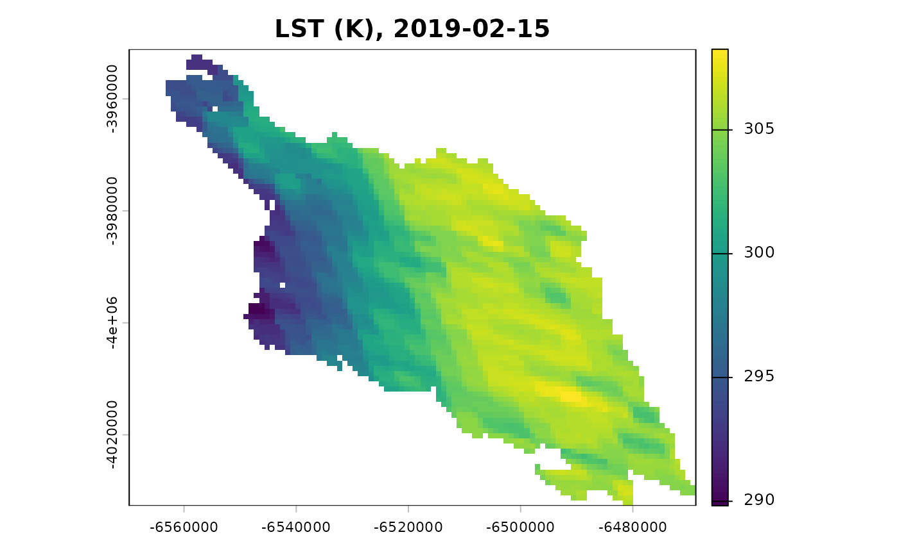

MODIS example scene of the Cauquenes province (15 February 2019)
Source:R/data.R
cauquenes_modis.RdSurface state of the METRIC chain built from MODIS collection 6.1
products of tile h12v12 over the Cauquenes province (Maule Region,
Chile) for 15 February 2019 (UTC; Terra overpass), on the 1 km
sinusoidal grid of the MOD11A1 file. It is real data, not synthetic: the
layers are the output of the package's MODIS preprocessing applied to the
official granules listed under Source, with the options listed below.
Cells outside the province (official DPA 2023 boundary, cells touched by
the polygon) are NA in every layer, flag words included (not
evaluated).
Format
A PackedSpatRaster of 88 rows, 109 columns and 20 layers, MODIS
sinusoidal projection (sphere of radius 6,371,007.181 m), cells of
926.625 m:
- lst
Land surface temperature (K), MOD11A1
LST_Day_1km.- albedo
Broadband shortwave white-sky albedo (-), MCD43A3
Albedo_WSA_shortwave.- ndvi
NDVI (-), MOD13A2.
- lai
Leaf area index (m2 m-2), MCD15A2H
Lai_500m.- emissivity
Broadband surface emissivity (-) from LAI.
- emis_31, emis_32
MOD11A1 band 31 and band 32 emissivities (-), carried for a split-window broadband emissivity; not used.
- doy
Day of year of the UTC date of the overpass.
- utc_hour
UTC hour of the overpass (h), from
Day_view_time(local solar time) and the longitude of the cell.- ndvi_lag_days
LST date minus the composite day of the NDVI pixel (days).
- valid_fraction_albedo, valid_fraction_lai
Fraction of valid 500 m sub-cells of the aggregated input (-).
- flags_lst, flags_overpass_time, flags_albedo, flags_ndvi, flags_lai, flags_emissivity, flags_emis_31, flags_emis_32
Flag words (integers): bit
bis set when the flag of that bit applies to the layer. Bits 0EF_INPUT_NA, 1EF_SURF_FILL, 2EF_SURF_CLOUD, 3EF_SURF_NOT_PRODUCED, 4EF_SURF_DN_OUT_OF_RANGE, 5EF_SURF_LAI_NONVEGand 15EF_SURF_LAI_ASSIGNEDare informative; 6EF_SURF_QA_OTHER, 7EF_SURF_CLOUD_ADJACENT, 8EF_SURF_SNOW, 9EF_SURF_WATER, 10EF_SURF_SALT_PAN, 11EF_SURF_LAI_BACKUP, 12EF_SURF_ALBEDO_MAGNITUDEand 13EF_SURF_OVERPASS_MISSINGare warnings; 14EF_SURF_ALBEDO_GT1is critical. Test a bit withbitwAnd(value, 2^b) > 0.
Source
Official MODIS collection 6.1 granules of tile h12v12 from the NASA LP DAAC cloud archive (LPCLOUD), found with NASA CMR and downloaded on 5 November 2026:
MOD11A1.A2019046.h12v12.061.2020344054048.hdf(CMRG2207028292-LPCLOUD; MOD11A1 v061, doi:10.5067/MODIS/MOD11A1.061 ), day 2019-02-15.MCD43A3.A2019046.h12v12.061.2020290040302.hdf(CMRG2370514964-LPCLOUD; MCD43A3 v061, doi:10.5067/MODIS/MCD43A3.061 ), day 2019-02-15 (window 2019-02-07 to 2019-02-22).MOD13A2.A2019033.h12v12.061.2020287215652.hdf(CMRG2597268827-LPCLOUD; MOD13A2 v061, doi:10.5067/MODIS/MOD13A2.061 ), composite 2019-02-02 to 2019-02-17.MCD15A2H.A2019041.h12v12.061.2020288004458.hdf(CMRG2279339425-LPCLOUD; MCD15A2H v061, doi:10.5067/MODIS/MCD15A2H.061 ), composite 2019-02-10 to 2019-02-17.
The DOIs are those of the CMR collection metadata (C1748058432-LPCLOUD,
C2278860820-LPCLOUD, C2565788905-LPCLOUD and
C2222147000-LPCLOUD).
MODIS data are shared openly without restriction (EOSDIS Data Use and
Citation Guidance). Province boundary: DPA 2023 (SUBDERE, IDE Chile),
see inst/extdata/cauquenes-province.yml. Built with
data-raw/modis-example.R (EarthFlux 0.0.0.9000, terra 1.9.50,
GDAL 3.8.4, PROJ 9.4.0, GEOS 3.12.1, R 4.3.3); full provenance in
data-raw/cauquenes_modis.yml of the source repository.
Details
The object is a packed terra raster (see terra::wrap()); use
terra::unwrap(cauquenes_modis) to get the SpatRaster.
Options of the assembly (explicit; none is a package default): LST of
MOD11A1 (Terra); white-sky shortwave albedo of MCD43A3 of the same day;
NDVI of the MOD13A2 composite whose period contains the date, matched per
pixel with its composite day; LAI of the MCD15A2H composite whose period
contains the date; 500 m inputs aggregated with the mean, only where
every 500 m sub-cell is valid; broadband emissivity from LAI (empirical
relation); LAI 0 assigned to the non-vegetated MCD15A2H classes 249-254
(flag EF_SURF_LAI_ASSIGNED, emissivity 0.95 there); QA policy "flag"
(QA findings are flagged, values are kept unless the product does not
provide them). Most of these choices are candidates pending
verification; the scene is meant for examples, tests and vignettes, not
for scientific results.
In the 3,779 cells of the province, LST is valid in 96.7 % (the rest:
fill, clouds or not produced according to QC_Day), NDVI in 99.1 % and
albedo, LAI and emissivity in practically all of them. Cells touched by
the coastline include sea (flag EF_SURF_WATER in NDVI and LAI).
Examples
r <- terra::unwrap(cauquenes_modis)
r
#> class : SpatRaster
#> size : 88, 109, 20 (nrow, ncol, nlyr)
#> resolution : 926.6254, 926.6254 (x, y)
#> extent : -6569774, -6468772, -4032674, -3951131 (xmin, xmax, ymin, ymax)
#> coord. ref. : +proj=sinu +lon_0=0 +x_0=0 +y_0=0 +R=6371007.181 +units=m +no_defs
#> source(s) : memory
#> names : lst, albedo, ndvi, lai, emissivity, emis_31, ...
#> min values : 289.82, 0.02475, 0.0821, 0, 0.95, 0.974, ...
#> max values : 308.26, 0.233, 0.896, 6.8, 0.98, 0.984, ...
#> unit : K, -, -, m2 m-2, -, -, ...
terra::plot(r[["lst"]], main = "LST (K), 2019-02-15")

# cells of the province whose LST QA reports clouds (bit 2)
cloud <- terra::app(r[["flags_lst"]], function(x) bitwAnd(x, 4L) > 0)
terra::global(cloud, "sum", na.rm = TRUE)
#> sum
#> lyr.1 72